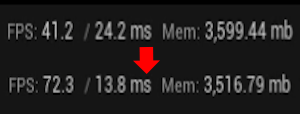
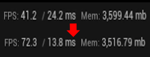

Optimized Ghibli-Inspired Volumetric Clouds and Foliage
Description
Inspired by the timeless worlds of Studio Ghibli, this project focuses on creating soft, painterly volumetric clouds and expressive foliage—optimized for real-time performance in games and interactive media.
Volumetric Clouds
I have been messing with VDBs and volumetrics within Unreal for a while now, all starting on my capstone project SOLANIS. I wanted to do a deeper dive in how to get them to work with my own Houdini VDBs and Optimize them properly so that's what I did.
The clouds are created using 2 cloud vdb setup's connected to eachother, they are then added together, touched up, and exported to Unreal. I did no special setup for the material, it is the default Unreal material that is made for VDBs.
Foliage
The foliage for the scene was created in Blender using actual models and geometry, no cards. I wanted to challenge myself to optimize actual geometry foliage.
The material that I created for the grass allows for a little bit better wind control as well as uses RVT's on the landscape to create color variation outside of the general variation I did myself. I stylized it by making fake shadows using colors in the shaders without overwhelming the foliage.
Optimization
I was able to optimize this scene from about 40FPS to 70FPS on my Intel I7 and RTX 2070. VDBs are ungodly inefficient in the grand scheme of actual gaming, but it was a nice challenge.
I was able to figure out some good CVAR values for increasing VDB performance while still keeping really good quality. Optimizing the foliage came down to some classics: culling, WPO distance, and LODs.
 

What I Learned
Experimental Tech is a good learning experience: VDB implementation in games and Unreal is still a really new, messy, and inefficient technology. There has been big breakthroughs in recent Unreal updates and CG specialists have had a good time with it, but it has a way to go. Messing with something as experimental as this is always a good test of your experimentation and deduction skills as resources online may be thin.Have a vision: I sought at the beginning of this project to recreate Studio Ghibli Clouds. I used many reference photos and other skills in stylization that I had gained from other projects to allow myself to fulfill this vision. If you have a clear vision in mind, it is a lot easier to get further in the process as you have a clear path of what you are actually doing.